【统计学习】Curse of dimensionality(维度灾难)
参考原文 https://blog.csdn.net/zbc1090549839/article/details/38929215
MSE（均方误差）
RMSE （均方根误差）
MAE（平均绝对误差）
维度灾难简介
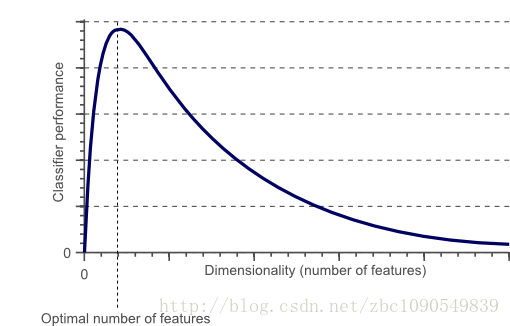
当特征增多（也就是维数增加时） 分类器性能逐渐上升，但是到达某点后开始下降。
维度灾难原因和过拟合
维度为1时（一个特征）
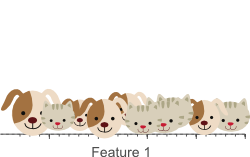
维度为2时，依然没办法很好分类
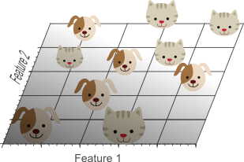
再加一个特征，此时很容易找到一个平面进行分类
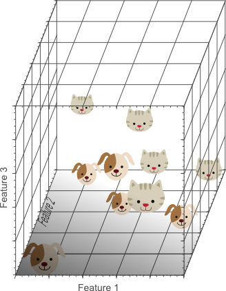
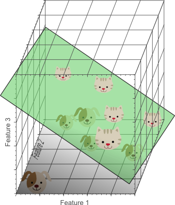
从1维到3维，给我们的感觉是：维数越高，分类性能越优。然而，在Figure 1中，我们说维数过高将导致一定的问题：具体来说，在一维特征空间下，我们假设一个维度的宽度为5个单位，这样样本密度为10/5=2;在2维特征空间下，10个样本所分布的空间大小55=25，这样样本密度为10/25=0.4;在3维特征空间下，10个样本分布的空间大小为55*5=125，样本密度就为10/125=0.08.
如果我们继续增加特征数量，随着维度的增加，样本将变得越来越稀疏，在这种情况下，也更容易找到一个超平面将目标分开。然而，如果我们将高维空间向低维空间投影，高维空间隐藏的问题将会显现出来：
也就是随着维数增加，样本密度变得越来越小。高维空间隐藏的问题开始显现出来
1.过多的特征导致过拟合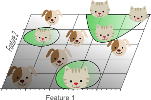
高维空间训练形成的分类器，相当于在低维空间的一个复杂的非线性分类器，这种分类器过多的强调了训练集的准确率甚至于对一些错误/异常的数据
也进行了学习，而正确的数据却无法覆盖整个特征空间。为此，这样得到的分类器在对新数据进行预测时将会出现错误。这种现象称之为过拟合，同时也是维灾难的直接体现
在换个角度来解释维数灾难，下图展示了由于高维而带来的数据稀疏性问题：假设有一个特征，它的取值范围D在0到1之间均匀分布，并且对狗和猫来说其值都是唯一的，我们现在利用这个特征来设计分类器。如果我们的训练数据覆盖了取值范围的20%(e.g 0到0.2)，那么所使用的训练数据就占总样本量的20%。
上升到二维情况下，要覆盖二维特征空间20%的面积，则需要在每个维度上取得45%的取值范围。
在三维情况下，要覆盖特征空间20%的体积，则需要在每个维度上取得58%的取值范围…
在维度接近一定程度时，要取得同样的训练样本数量，则几乎要在每个维度上取得接近100%的取值范围，或者增加总样本数量，但样本数量也总是有限的。
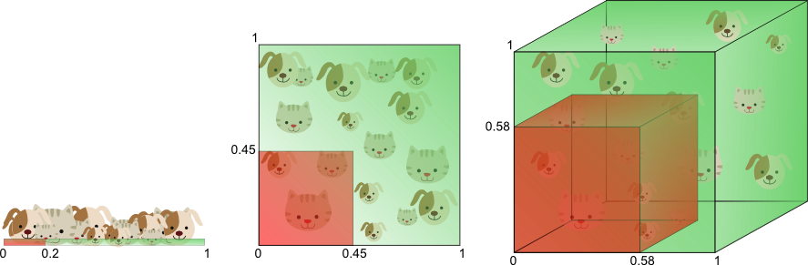
在分类中我们使用的特征数量越多，那么由于高维下数据的稀疏性我们不得不需要更多的训练数据来对分类器的参数进行估计(高维数下分类器参数的估计将变得更加困难)。维数灾难造成的另外一个影响是：数据的稀疏性致使数据的分布在空间上是不同(实际上，数据在高维空间的中心比在边缘区域具备更大的稀疏性，数据更倾向于分布在空间的边缘区域)
假设一个正方形代表二维特征空间，特征空间的平均值是这个正方形的中心，到这个中心距离为一个单位距离的样本分布在一个单位圆中。不在这个单位圆的样本相对于中心更接近正方形的边角。这些样本因为特征值差距很大（如对角的样本）而很难分类。由图9可以看出，如果样本都落在内切圆中，分类将会简单很多：
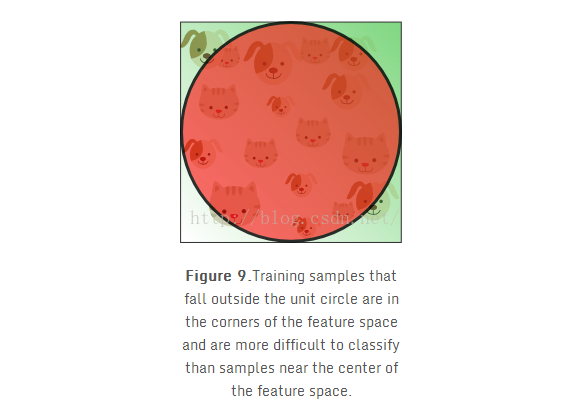
有意思的是如果我们一直增加维度，那正方形（超立方体）中的圆（超球面）的体积是如何变化的呢？超立方体的体积始终保持1^d = 1，这个d维超立方体内切超球面的体积（半径为0.5）可以用如下公式计算：
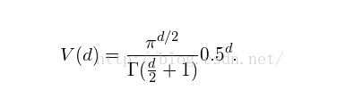
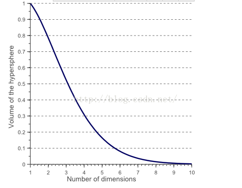
可以看出随着维度趋于无穷，超球面的体积趋于0，然而超立方体体积没有变化。这解释了分类问题中的维度灾难：在高纬空间中，大多数训练样本处于超立方体的边角处。上面也提到过，边角处的样本相对于位于超球面内的样本更难分类。可以从下图中看出来，下图展示了二维正方形、三维立方体、和有着2^8 = 256个角的八维的超立方体：
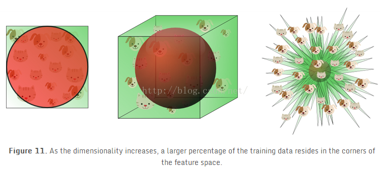
对于一个8维的超立方体，大约98%的数据分布在它的256个角处。因此，当特征空间维度趋于无穷大，样本到中点的最大和最小欧几里得距离的差，比上样本到中点的最小欧几里得距离趋于0：
如何避免维度灾难
1.训练集样本越少，越应该用少量的特征，如果N个训练样本足够覆盖一个一维的特征空间（区间大小为一个单位），那么 需要N^2个样本去覆盖一个同样密度的二维的特征空间，需要N^3个样本去覆盖三维的特征空间。换句话说，就是训练样本多少需要随着维度指数增长。
2.那些精确计算非线性决策边界的分类器（如神经网络、KNN分类器、决策树）不会泛化的很好，而且容易发生过拟合。因此在用这些分类器的时候应该少用一些纬度。如果一个分类器泛化能力很好（如朴素贝叶斯，线性分类器），由于分类器本身表现能力差一些，那么纬度可以高一些。图6显示在高纬度空间用一个简单的分类器，就相当于在低纬度空间用一个复杂的分类器。
3.一个非常重要的探测和避免分类训练过程中过拟合的方法是交叉验证。交叉验证方法将原始训练数据分成一个或多个训练数据子集。在分类训练中，一个子集用来测试分类结果的准确性，剩下的子集用来进行参数估计。如果分类结果在训练集合和测试集合上相差很多，那么就是产生了过拟合。很多类型的交叉验证如k折交叉验证和留一交叉验证可以用于可提供的训练数据很少的情况。